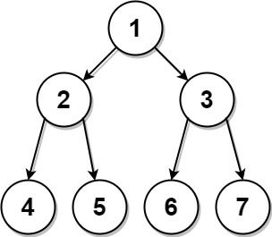

889. 从前序与后序遍历序列构造二叉树
前序第一个是根，左子树的根就是紧随其后的 pre[pl+1]；在后序里定位它，切出左子树长度后递归。
思路
- 前序 = 根 + 左子树 + 右子树，后序 = 左子树 + 右子树 + 根：两头的「根」都在端点上。
- 前序里根后面那个值
pre[pl+1]必是左子树的根；用哈希表查它在后序的位置，减去段起点就是左子树长度leftLen。 - 按
leftLen把两段各自切成左、右子树递归；空段返回null。 - 只有独生孩子时答案不唯一，本解法约定挂左孩子（LeetCode 判题接受任一答案）。
图解
最优解
1import java.util.*;2 3class Solution {4 private int[] pre, post;5 private Map<Integer, Integer> pos; // 值 -> 它在后序里的下标6 7 public TreeNode constructFromPrePost(int[] preorder, int[] postorder) {8 pre = preorder;9 post = postorder;10 pos = new HashMap<>();11 for (int i = 0; i < post.length; i++) pos.put(post[i], i);12 return build(0, pre.length - 1, 0, post.length - 1);13 }14 15 // pre[pl..pr] 与 post[ol..or] 是同一段子树16 private TreeNode build(int pl, int pr, int ol, int or) {17 if (pl > pr) return null;18 TreeNode root = new TreeNode(pre[pl]); // 前序第一个是根19 if (pl == pr) return root;20 // 左子树的根是 pre[pl+1]：在后序里找到它，它之前（含）都是左子树21 int leftLen = pos.get(pre[pl + 1]) - ol + 1;22 root.left = build(pl + 1, pl + leftLen, ol, ol + leftLen - 1);23 root.right = build(pl + leftLen + 1, pr, ol + leftLen, or - 1);24 return root;25 }26}题目
给定两个整数数组，preorder 和 postorder ，其中 preorder 是一个具有 无重复 值的二叉树的前序遍历，postorder 是同一棵树的后序遍历，重构并返回二叉树。
如果存在多个答案，您可以返回其中 任何 一个。
示例 1：

输入：preorder = [1,2,4,5,3,6,7], postorder = [4,5,2,6,7,3,1] 输出：[1,2,3,4,5,6,7]
示例 2:
输入: preorder = [1], postorder = [1] 输出: [1]
提示：
1 <= preorder.length <= 301 <= preorder[i] <= preorder.lengthpreorder中所有值都 不同postorder.length == preorder.length1 <= postorder[i] <= postorder.lengthpostorder中所有值都 不同- 保证
preorder和postorder是同一棵二叉树的前序遍历和后序遍历
题面取自力扣当前版本。
数据快照 2026-11-04。题面版权归力扣所有，本站点仅供本人学习使用，请勿对外发布。